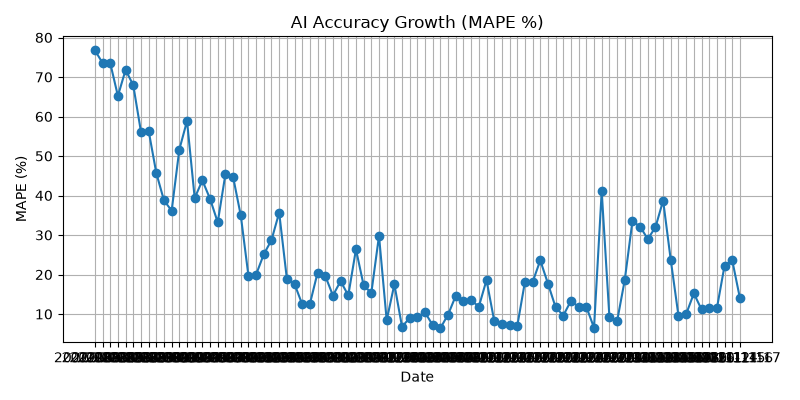

Self-Learning Osaka Weather AI
今日の 24時間 予報
大阪 天気予報
| Time | Temperature | Precipitation Probability | Weather |
|---|
| 2026-11-18T13:00 | 15.6°C | 0% | Partly cloudy |
| 2026-11-18T14:00 | 16.0°C | 0% | Partly cloudy |
| 2026-11-18T15:00 | 16.2°C | 0% | Mainly clear |
| 2026-11-18T16:00 | 14.8°C | 0% | Overcast |
| 2026-11-18T17:00 | 14.0°C | 0% | Partly cloudy |
| 2026-11-18T18:00 | 12.5°C | 0% | Overcast |
| 2026-11-18T19:00 | 11.9°C | 0% | Overcast |
| 2026-11-18T20:00 | 10.8°C | 0% | Overcast |
| 2026-11-18T21:00 | 10.3°C | 0% | Overcast |
| 2026-11-18T22:00 | 8.8°C | 0% | Overcast |
| 2026-11-18T23:00 | 10.5°C | 0% | Overcast |
| 2026-11-19T00:00 | 9.3°C | 0% | Partly cloudy |
| 2026-11-19T01:00 | 7.8°C | 0% | Mainly clear |
| 2026-11-19T02:00 | 9.0°C | 0% | Partly cloudy |
| 2026-11-19T03:00 | 7.8°C | 0% | Partly cloudy |
| 2026-11-19T04:00 | 8.7°C | 0% | Partly cloudy |
| 2026-11-19T05:00 | 10.0°C | 0% | Partly cloudy |
| 2026-11-19T06:00 | 9.4°C | 0% | Overcast |
| 2026-11-19T07:00 | 10.5°C | 0% | Partly cloudy |
| 2026-11-19T08:00 | 11.0°C | 0% | Partly cloudy |
| 2026-11-19T09:00 | 12.7°C | 0% | Overcast |
| 2026-11-19T10:00 | 13.7°C | 0% | Overcast |
| 2026-11-19T11:00 | 14.0°C | 0% | Partly cloudy |
| 2026-11-19T12:00 | 15.3°C | 0% | Overcast |
直近の完了済み気象データ
| 時間 | 気温 | 降水 |
|---|
| 00:00 | 11.2 | 0% |
| 01:00 | 10.5 | 0% |
| 02:00 | 10.3 | 0% |
| 03:00 | 9.9 | 0% |
| 04:00 | 9.6 | 0% |
| 05:00 | 9.2 | 0% |
| 06:00 | 9.0 | 0% |
| 07:00 | 8.7 | 0% |
| 08:00 | 9.4 | 0% |
| 09:00 | 11.3 | 0% |
| 10:00 | 13.4 | 0% |
| 11:00 | 15.2 | 0% |
| 12:00 | 17.0 | 0% |
| 13:00 | 18.2 | 0% |
| 14:00 | 18.7 | 1% |
| 15:00 | 17.8 | 10% |
| 16:00 | 16.5 | 35% |
| 17:00 | 15.4 | 67% |
| 18:00 | 14.3 | 92% |
| 19:00 | 14.1 | 100% |
| 20:00 | 13.8 | 100% |
| 21:00 | 14.1 | 100% |
| 22:00 | 13.9 | 100% |
| 23:00 | 13.8 | 100% |
| 00:00 | 13.8 | 90% |
| 01:00 | 13.6 | 63% |
| 02:00 | 13.4 | 26% |
| 03:00 | 13.5 | 0% |
| 04:00 | 13.1 | 0% |
| 05:00 | 13.0 | 0% |
| 06:00 | 12.8 | 2% |
| 07:00 | 12.3 | 2% |
| 08:00 | 12.8 | 1% |
| 09:00 | 14.3 | 0% |
| 10:00 | 16.6 | 0% |
| 11:00 | 17.3 | 0% |
| 12:00 | 17.9 | 0% |
誤差（完了観測 vs 事前予測）
MAE: 3.204 / MAPE: 22.42%
| 温度誤差 (°C) |
|---|
| 4.20 |
| 3.40 |
| 1.20 |
| 0.80 |
| 0.80 |
| 2.60 |
| 3.60 |
| 3.70 |
| 3.60 |
| 4.10 |
| 5.10 |
| 4.90 |
| 4.60 |
| 3.90 |
| 5.30 |
| 4.20 |
| 3.40 |
| 1.90 |
| 2.30 |
| 1.70 |
| 3.40 |
| 2.40 |
| 2.60 |
AI 成長グラフ（MAPE履歴）
